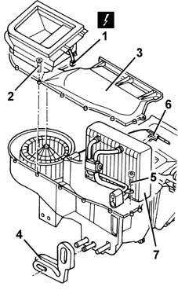
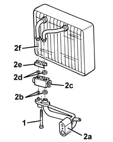

5040C66 air conditioner evaporator - r+r with air conditioner box removed
- Path
- Procedures > 50 AUXILIARY UNITS > 5040 AIR CONDITIONING CASING AND COMPONENTS > 5040C air conditioner box and components > 5040C66 air conditioner evaporator - r+r with air conditioner box removed
- Kind
- repair procedure (removal / refitting; the operation number is the code)
- Applies to
- all engines; all production periods
- Interactive page
- https://sloeber94.github.io/elrnDB-fMltpl/en/#/2891826
Applies to: all engines; all production periods
 Removing
Removing
 Refitting
Refitting1. Disconnect the electrical connection for the air intake actuator.
 | Name | Connector |
|---|---|---|
1 | Air intake actuator |
2. Undo the bolts.
3. Remove the cover.
4. Move the seal.
5. Undo the bolt.
6. Disconnect the frost sensor from the evaporator.
7. Remove the evaporator unit.

Applies to: all engines; all production periods
1. Undo the bolts.
2. Remove the pipe connector (2a), the lower seals (2b), the expansion valve (2c), the upper seals (2d) and the plate (2e) and recover the evaporator (2f).

Applies to: all engines; all production periods
Refitting
RemovingCheck that the components are not damaged.
Position the plate, the new upper seals, the expansion valve, the new lower seals and the pipe connector on the evaporator pipes and fix them using the bolts.
Position the frost sensor on the evaporator.
Place the evaporator in the housing and tighten the bolt.
Position the seal.
Position the cover and fix it using the bolts.
Connect the electrical connection.